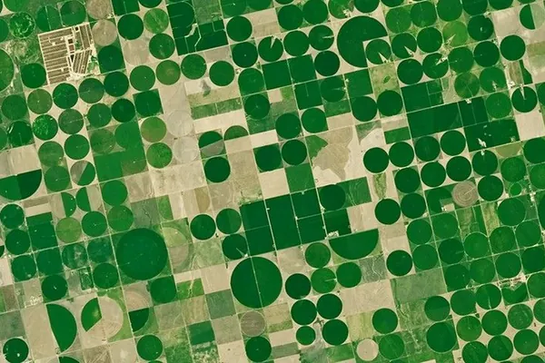

Diagrammer og selskabseksempler bygger på opgørelsen 16.10.2026. Se de aktuelle selskaber og fondsvægte nedenfor. Se temaets aktuelle selskaber ↓
Rumfart
Er produktet en opsendelse, en forbindelse eller data?
En opsendelse er én forretning. Satellitforbindelser og billeder af Jorden er andre. Følg de tre retninger i kortet, og gå videre til selskaberne bag dem.
Temaet samler selskaber i fonden, der bygger raketter og satellitter, og selskaber, der bruger satellitter til at tage billeder af Jorden eller skabe forbindelse. Ét selskab har Månen som sit hovedområde. Siden viser, hvor meget hver del fylder i fonden. Hvor stor en del af hvert selskabs omsætning der kommer fra rumfart, kan ikke opgøres for alle. For SpaceX og Rocket Lab står det længere nede.
af PMINDI er placeret i temaet.
Andele pr. 16.10.2026. Et felt er 1 % af hele fonden. Temaerne er NewDeal Invests redaktionelle opdeling.
Se fordelingen og datagrundlaget ↓NewDeal Invests perspektiv
Ugebrevet sammenholder etablerede værdiansættelsesmodeller med teknologivirksomheder. Her starter gennemgangen med, hvad rumfartsselskaberne faktisk leverer.
“På den anden side står virksomheder som SpaceX, NVIDIA, Anthropic og OpenAI, hvor de klassiske værktøjer efter min mening ofte kommer til kort.”Mads Christiansen, fondschef og medstifter af NewDeal Invest · 15.06.2026
Uge 24 - SpaceX deler vandene ↗
Fonden
Temaets andel af fonden
5,99%
af fonden ligger i rumfart.
- Selskaber18 af fondens 373
- Største selskab i temaetSpaceX 1,38 % af fonden
- Plads blandt fondens 12 temaer, målt på andelNr. 7
Alle procenter på siden er andele af hele fonden, afdelingen PMINDI (NewDeal Invest klasse n, den udloddende andelsklasse, der udbetaler udbytte) pr. 16.10.2026.
Temaerne er NewDeal Invests egen opdeling af fondens selskaber.
Rumfart
Tre retninger på én himmel
Andel af hele fonden, afdelingen PMINDI pr. 16.10.2026
Tegningen viser tre retninger. Jo tykkere en pil er, jo mere fylder den i fonden. Tryk på en gruppe for at se selskaberne.
Op
10 selskaber · 3,58 %
Det, der skal op
Opsendelse
Op · 4 selskaber · 2,23 % af fonden
En raket bringer satellitter og udstyr op i kredsløb om Jorden. I USA var der i FAA's regnskabsår 2025, fra oktober 2024 til september 2025, 195 opsendelser med tilladelse fra luftfartsmyndigheden FAA, knap 4 om ugen. SpaceX stod for omkring 4 af hver 5. Rocket Lab og Firefly står også på FAA's liste. Firefly landede i 2025 et fartøj på Månen. Starfighters Space flyver i dag med F-104, jagerfly, der kan flyve hurtigere end lyden, for kunder, der har brug for den slags flyvninger. Selskabet skriver i sit prospekt, at det senere vil sende raketter op fra fly. Det gør det ikke i dag.
Tryk på et selskab for at se, hvad det laver.
Satellitter og platforme
Op · 2 selskaber · 0,75 % af fonden
En satellit består af en platform med strøm, styring og radio og det udstyr, den skal bruge. Selskaberne bygger satellitter og dele til dem.
Tryk på et selskab for at se, hvad det laver.
Udstyr om bord og rumsystemer
Op · 2 selskaber · 0,43 % af fonden
Udstyr og systemer til rumfartøjer, både til forskning og forsvar.
Tryk på et selskab for at se, hvad det laver.
Raketdele og motorer
Op · 2 selskaber · 0,17 % af fonden
Dele til raketter, satellitter og fly. Det største af de to laver mest dele til jetmotorer og fly. Om materialerne kan du læse på siden Råstoffer.
Tryk på et selskab for at se, hvad det laver.
Ned
7 selskaber · 1,93 %
Det, der kommer ned igen
Billeder og data om Jorden
Ned · 5 selskaber · 1,42 % af fonden
Satellitter tager billeder og opfanger signaler fra Jorden. Planet Labs skriver, at dets satellitter fotograferer Jordens landområder hver dag. HawkEye 360 opfanger radiosignaler for forsvaret i USA og i lande, som USA samarbejder med om forsvar.
Tryk på et selskab for at se, hvad det laver.
Forbindelse fra rummet
Ned · 2 selskaber · 0,51 % af fonden
Satellitter sender tale og data til steder, hvor der ikke er mobilmaster. AST SpaceMobile bygger et mobilnet i rummet, som almindelige telefoner kan bruge direkte. Om net og datacentre på Jorden kan du læse på siden Datacentre.
Tryk på et selskab for at se, hvad det laver.
Ud
1 selskab · 0,48 %
Det, der rækker længere ud
Månen
Ud · 1 selskab · 0,48 % af fonden
Intuitive Machines bygger fartøjer, der lander på Månen, og har sendt dem dertil for NASA. Selskabet arbejder også med udstyr og tjenester til aktivitet i rummet ud over Jorden. Det ejer desuden en virksomhed, der bygger kommunikationssatellitter.
Tryk på et selskab for at se, hvad det laver.
Op og ned
Mest op, men omsætningen kommer ofte fra andet end raketter
Omkring tre femtedele af temaet ligger i det, der skal op: raketter, raketdele, satellitter og udstyr om bord. Temaets største selskab er SpaceX, som alene er under en fjerdedel af temaet.
SpaceX blev grundlagt i 2002. Selskabet har tre dele: rumfart med raketterne Falcon og Starship og rumkapslen Dragon, forbindelse via Starlink og en AI-del. Det står i selskabets prospekt fra juni 2026. Et prospekt er et dokument med fakta om selskabet til nye investorer.
SpaceX står under Opsendelse, men omkring 6 af hver 10 dollars i omsætning kom fra forbindelse via Starlink, ikke fra raketter. Omsætningen var 18.674 mio. USD i 2025. Det svarer i størrelse til ca. 4 % af Danmarks BNP. Starlink havde 8,9 mio. abonnenter ved udgangen af 2025, omtrent dobbelt så mange som året før.
AI-delen kom til, da SpaceX overtog selskabet xAI i februar 2026. Tallene for 2025 er regnet, som om xAI og det sociale medie X havde hørt til SpaceX hele året. Over halvdelen af AI-delens omsætning i 2025 var annoncer på X. SpaceX laver derfor også noget, der hører til temaet Datacentre. I fondens opdeling tælles selskabet kun med her.
Rocket Lab er kendt for sine raketter, men omkring to tredjedele af selskabets omsætning i 2025 kom fra at bygge rumfartøjer og dele.

SpaceX’ omsætning i 2025
18.674 mio. USD fordelt på selskabets tre dele
- Rumfart: opsendelser, Dragon og Starship4.086 mio.
- Forbindelse: Starlink11.387 mio.
- AI3.201 mio.
Rocket Labs omsætning i 2025
601,8 mio. USD fordelt på selskabets to dele
- Opsendelser199,0 mio.
- Rumfartøjer og dele402,8 mio.
Beløb i mio. USD fra SpaceX’ prospekt (åbner i nyt vindue) og Rocket Labs årsrapport (åbner i nyt vindue). Andele af temaet og af omsætningen er beregnet af NewDeal Invest. AI-delen omfatter også annoncer på X for 1.844 mio. USD. BNP: Danmarks Statistik (åbner i nyt vindue).
Naboerne
Også med en fod i rumfart
Disse to selskaber hører først og fremmest til et andet tema, men laver også noget til rumfart. De tælles med under deres eget hovedtema, ikke her.
- Rolls-Royce HoldingsHovedtema: Energi og elnet0,25 % af fonden
- AIRO Group HoldingsHovedtema: Robotter & fysisk AI0,03 % af fonden
SpaceX laver også noget, der hører til temaet Datacentre. I fondens opdeling tælles selskabet kun med her.
Set udefra
Marker, raketter og nyheder
Her er udvalgte opslag og videoer fra medier, rumorganisationer og selskaber. De er ikke fondens holdning.
Se efter: Skeln mellem opsendelsen og den tjeneste, der bagefter leveres fra rummet.
Se efter: Skeln mellem opsendelsen og den tjeneste, der bagefter leveres fra rummet.
Rocket Lab @RocketLab · på engelsk
Selskabets eget opslag Kort fortalt Rocket Lab oplyser, at selskabets raket Electron har sat alle tre HAWK-satellitter til kunden HawkEye 360 i kredsløb.
Hvad skal du lægge mærke til? Læs opslaget sammen med afsnittet om op · opsendelse. Skeln mellem opsendelsen og den tjeneste, der bagefter leveres fra rummet.
NASASpaceflight @NASASpaceflight · rumfartsmedie · på engelsk
Kort fortalt Ifølge NASASpaceflight har Booster 22, det nederste trin af en Starship-raket, forladt hallen, hvor den blev samlet, og skal køres ud til det område, hvor raketterne sendes op, for at blive testet.
Hvad skal du lægge mærke til? Læs opslaget sammen med afsnittet om op · opsendelse. Skeln mellem opsendelsen og den tjeneste, der bagefter leveres fra rummet.
The Wall Street Journal @WSJ · på engelsk
Kort fortalt Politikere fra begge partier i den amerikanske Kongres kræver en undersøgelse af Elon Musk, efter at The Wall Street Journal har beskrevet, at SpaceX-chefen begrænsede Ukraines adgang til Starlink.
Hvad skal du lægge mærke til? Læs opslaget sammen med afsnittet om spacex under opsendelse. Skeln mellem opsendelsen og den tjeneste, der bagefter leveres fra rummet.
Reuters @Reuters · på engelsk
Kort fortalt Ifølge Reuters har Japan sendt et ubemandet rumfartøj af sted mod Mars-månen Phobos. Reuters skriver, at missionen har til formål at blive den første, der henter prøver fra den lille måne tilbage til Jorden.
Hvad skal du lægge mærke til? Læs opslaget sammen med afsnittet om ud. Skeln mellem opsendelsen og den tjeneste, der bagefter leveres fra rummet.
Opslagene er udvalgt af teamet bag NewDeal Invest. Afsenderne og de nævnte selskaber står ikke bag denne side, og opslagene er ikke fondens vurdering. NASASpaceflight er et uafhængigt medie og ikke NASA.
Det skal man vide om temaet
- Forsvar fylder. Seks af selskaberne beskriver sig selv som rum- og forsvarsselskaber. Deres kunder er ofte stater og militær, og den slags kontrakter kan ændre sig (selskabernes egne beskrivelser: York Space Systems (åbner i nyt vindue), Redwire (åbner i nyt vindue), Firefly Aerospace (åbner i nyt vindue), Voyager Technologies (åbner i nyt vindue), HawkEye 360 (åbner i nyt vindue), Karman Holdings (åbner i nyt vindue)).
- Få store selskaber. SpaceX er temaets største selskab med 1,38 % af fonden, under en fjerdedel af temaet. De fem største selskaber, SpaceX, Planet Labs, AST SpaceMobile, Intuitive Machines og MDA Space, er tilsammen 3,28 % af fonden, over halvdelen af temaet. Temaet afhænger derfor meget af, hvordan det går for få selskaber (afdelingen PMINDI pr. 16.10.2026).
- Grænsetilfælde. Nogle selskaber er kun delvist rumfart. Ét laver mest dele til fly, ét sender i dag ikke raketter op, og temaets største selskab har også en AI-del (Howmet Aerospace, årsrapport 2025 (åbner i nyt vindue), Starfighters Space, prospekt (åbner i nyt vindue) og SpaceX, prospekt (åbner i nyt vindue)).
Kilder: selskabernes egne årsrapporter og prospekter, linket ved hvert punkt.
Videre
Det hænger sammen
Siden fortæller ikke om net og datacentre på Jorden, om materialerne i raketterne eller om droner og fly. Det gør andre af fondens temaer.
Kilder og kreditering
Tal
- Andele: afdelingen PMINDI pr. 16.10.2026 (fondens data). Temaer og grupper: NewDeal Invests egen opdeling.
- SpaceX: prospekt af 12.06.2026 (åbner i nyt vindue) (dokumenttype 424B4 hos det amerikanske finanstilsyn SEC), regnskabsåret 2025.
- Opsendelser: FAA, Commercial Space, FY 2025 Results (åbner i nyt vindue). Kun opsendelser med licens fra FAA i finansåret 2025 (01.10.2024 til 30.09.2025), kun de faktiske tal.
- Rocket Lab: årsrapport 2025 (åbner i nyt vindue).
- Danmarks BNP 2025: Danmarks Statistik, NAN1 (åbner i nyt vindue).
- Hvad selskaberne laver: selskabernes egne beskrivelser i SpaceX (prospekt) (åbner i nyt vindue), Planet Labs (årsrapport) (åbner i nyt vindue), AST SpaceMobile (årsrapport) (åbner i nyt vindue), Intuitive Machines (årsrapport) (åbner i nyt vindue), MDA Space (ledelsesberetning) (åbner i nyt vindue), BlackSky Technology (årsrapport) (åbner i nyt vindue), Rocket Lab (årsrapport) (åbner i nyt vindue), York Space Systems (årsrapport) (åbner i nyt vindue), Starfighters Space (prospekt) (åbner i nyt vindue), Redwire (årsrapport) (åbner i nyt vindue), Firefly Aerospace (årsrapport) (åbner i nyt vindue), Satellogic (årsrapport) (åbner i nyt vindue), Spire Global (årsrapport) (åbner i nyt vindue), Voyager Technologies (årsrapport) (åbner i nyt vindue), Howmet Aerospace (årsrapport) (åbner i nyt vindue), HawkEye 360 (prospekt) (åbner i nyt vindue), Karman Holdings (årsrapport) (åbner i nyt vindue), Iridium Communications (årsrapport) (åbner i nyt vindue).
Billeder, video og opslag
- Tegninger, ikoner og videoplakater. Illustration: NewDeal Invest.
- Foto af marker i Kansas: NASA/USGS Landsat, “Landsat sees crops in Kansas” (åbner i nyt vindue), Wikimedia Commons, offentligt domæne (beskåret).
- Videoer: DW News (27.05.2022) og Learn With NASA (23.04.2026), YouTube. Videoerne hentes først, når du klikker.
- Opslag: Rocket Lab, NASASpaceflight, The Wall Street Journal og Reuters på X. Opslagene vises kun, hvis du klikker.
- Logoer tilhører de enkelte selskaber.
Selskaberne fra A til Å
Vælg et selskab og læs om forretningen.